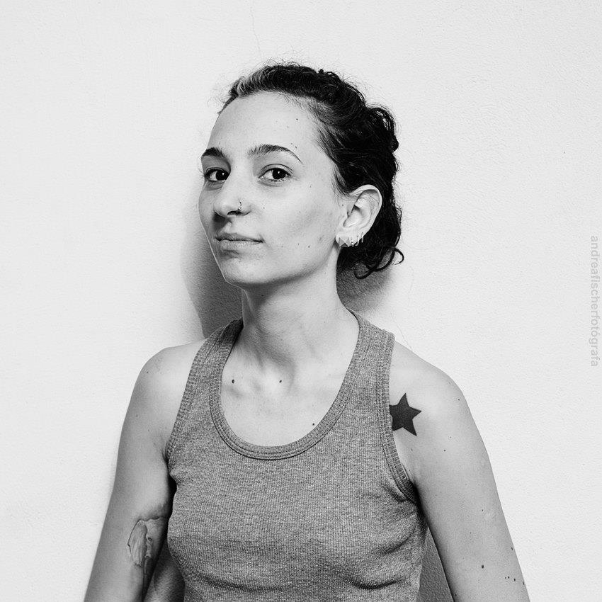

SOBRE MI
Tengo 33 años y actualmente vivo en la ciudad de Santa Fe, Argentina. Me formé en fotografía y en diferentes áreas del mundo de la imagen. Viajé por Argentina, Bolivia, Perú, Ecuador, Colombia y Venezuela. Siempre motivada a salir de la zona de confort y desarrollar nuevas habilidades, aprendí a adaptarme según las necesidades de cada situación. Me interesa crear un balance entre proyectos personales y trabajo que me permita disfrutar de la multipotencialidad de mis intereses, búsquedas creativas y objetivos.
HABILIDADES E INTERESES
Adobe Photoshop
Adobe Lightroom
Adobe Premiere
Resolume Arena
Adobe Illustrator
Ingles
Fotografía
Collage digital
Vj
Viajes y Cultura
Artesanía en plástico
Medio ambiente
EXPERIENCIAS
Creadora en Con-Fusión
2022 - Actualidad
Personalized Internet Assesor / Rater en Telus International (ex-Lionbridge)
2021 - Actualidad.
Colaboradora en Adobe Stock y Shutterstock
2021
Trabajos independientes
2019 - 2021
Fotografía de redes sociales para marcas independientes. Diseño y producción de artesanía en plástico (hdpe) y otros materiales reciclables. Gestión de actividades culturales.
Trabajos varios viajando
2016 - 2019
Administración hotelera, ayudante de cocina, mesera, bartender, cajera.
Community Manager y diseño de comunicación en Friendlylife y en Easy Wedding Argentina
2014 - 2015
Docente de Curso Básico Integral en Escuela de Fotografía Motivarte y en Espacio Cultural Dínamo. Fotografía Freelance de espectáculos y eventos
2011 - 2014
Administrativa y Bedel en el Instituto de Capacitación Aduanera
2008 - 2014
ESTUDIOS
Argentina programa
Actualidad
Curso de Introducción a la programación
Escuela de Oficios Artísticos de la provincia de Santa Fe
2021
Curso de Ecodiseño
2022
Producción de eventos culturales
Crehana
2020
Curso de Resolume Arena
Escuela de Fotografía Motivarte
2011 - 2013
Carrera de Fotógrafo Profesional y formación en escuela de formación docente.
Finalizado con título oficial.
Escuela de Arte Multimedial Da Vinci
2010
Curso de Adobe Photoshop CS5 y Curso de Adobe Premiere Pro CS4
Fotoclub de Buenos Aires
2009
Curso Visión y Composición con Luis Morilla
Facultad de Arquitectura, Diseño y Urbanismo de la Universidad de Buenos Aires
2008 - 2011
Carrera de Diseño de Imagen y Sonido. Incompleto.
CONTACTO
tel:+54 011 5140 5592
@taninquieta
celeste.ft23@gmail.com